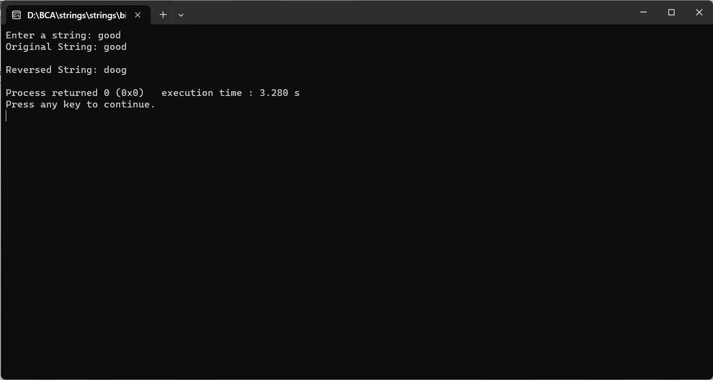

ENTER THE STRING FROM THE USER AND COPY REVERSE OF THE STRING INTO ANOTHER STRING
#include
#include
int main() {
char originalString[1000];
char reversedString[1000];
printf("Enter a string: ");
fgets(originalString, sizeof(originalString), stdin);
int length = strlen(originalString) - 1; // Exclude newline character
for (int i = 0; i < length; i++) {
reversedString[i] = originalString[length - 1 - i];
}
reversedString[length] = '\0'; // Add the null terminator at the end of the reversed string
printf("Original String: %s\n", originalString);
printf("Reversed String: %s\n", reversedString);
return 0;
}
